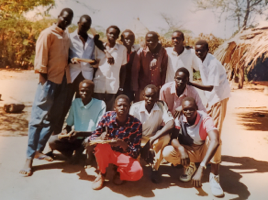

The Living Dead: Walking in the glory of my loving God!
The story of my journey from hell to glory
When the civil war broke out in Bortown on May 16, 1983, my father escorted us to the nearby town (Gakyoom) in the suburb of Bortown and then returned to his work at the Missionary Compound in Pakua.
Introduction
My name is Alier Reng. On February 25, 1981, I was born in the present-day Bortown, Jonglei State, South Sudan (however, like many Lost Boys and Lost Girls of Sudan, I am not sure about my exact birth date). Nonetheless, what matters to me is not how old I’m, but rather, I am grateful to the Almighty God for protecting and sustaining me thus far. I’m the third born in my family. My older siblings are girls (Abuol - deceased; Kuer is married with six children and lives in a Refugee Camp in Uganda), and our last born was a boy named Chiengyol - also deceased.
When the civil war broke out in Bortown on May 16, 1983, my father escorted us to the nearby town (Gakyoom) in the suburb of Bortown and then returned to his work at the Missionary Compound in Pakua. And it took him about two years to join us later in Nyany, Pakeer. Unfortunately, when my father reunited with us in the village, my mother, who’s suffering from Bilharzia (a water-borne disease), went to the western side of the Nile (Aliab in particular) to seek traditional treatment for her sickness, but she died there in 1985.
My Life in the Refugee Camps
In 1987, I fled my home country of South Sudan at the age of six, and I sought refuge in Ethiopia because of the civil war (Africa’s longest civil war). Unfortunately, after nearly four years in Pinyudo Refugee Camp, the Mengistu Haile Mariam’s government was overthrown. Consequently, we had to flee once again to South Sudan; we eventually wound up in Kakuma Refugee Camp in Northwest Kenya. We walked barefoot from South Sudan to Ethiopia and from Ethiopia to Kenya through South Sudan (but the youngest among us were fortunate to travel by the UN trucks from Koragareb to Magoos.
After settling in Kakuma, we resumed our studies solely under the trees because there were no schools. I enrolled in the third grade in 1993 at Torit primary school (Torit was a name given to one of our Lost Boys’ groups – Group 29; the former Group 2 in Ethiopia). In 1994, through the Radda Barnen, the UN initiated a program to pair young boys with families. Thus, I registered myself with three additional boys, and we went to my cousin Awan Lueth’s home in Group 38.
This decision later became one of the best decisions I had ever made because my nephew Guor Awan taught me mathematics and sciences when I was in grade 4 in 1994. And for the first time in my educational journey, I tied in the 10th position with another young boy. In January 1995, I went to the 5th grade. And I read and solved all the problems in the 5th-grade mathematics textbook before the middle of Term 1 – Guor had pressed the right button in my brain. I was now excelling in school. So, along with many other boys, I skipped the rest of grade 5 and went to grade 6 (I completed both grades 5 & 6 in one year).
In 1996 I graduated from primary school, enrolled in Form One at Kakuma Refugee Secondary School, and graduated in November 2000. Around mid-1998, the United Nations initiated a refugee resettlement program dubbed “The Lost Boys of Sudan” program. So, I did my process while in school and completed the remainder of the process in June 2001 (I believe this was when I passed my final interview). In June 2001, the Lutheran World Federation (LWF) hired and posted me to Jebel Mara primary school as a classroom teacher. I taught 8th-grade English and 7th-grade Government, History & Civic (G.H.C). However, I only taught there for about three months before resettling in Utica, NY, through the Lutheran Immigration and Refugee Services (LIRS). We arrived at the JFK International Airport around 8 or 9 pm, New York time. And our caseworkers picked us up and took us to the hotels; we spent the night in New York City. And they drove us to Utica on the following morning.

I am the one reading the newspaper in the photo.
My Life in America
In Utica, the LIRS rented me an apartment at the Kennedy Plaza (the tallest building in Utica at the time). However, I did not spend a single day or night in it because my groupmates, whom we had grouped ourselves in Kakuma but were randomly selected to come to the U.S. first, asked me to stay with them at their apartment. They were rented four bedrooms or so. We later became known to the South Sudanese community in Utica as the “10 Blecker Street’s Brothers.” In addition to the assistance and support we received from the LIRS, Pastor Sharon Hare of Mariah Olivet Presbyterian church and her daughter Michelle and the congregation also supported us. They bought us winter coats and many other personal items.
And most importantly, Pastor Sharon and Michelle picked us up every Sunday morning and drove us home after the church service. Pastor Sharon was like a mother to me. She asked me to write articles to be published in the church bulletin paper every Sunday.
Unfortunately, because the economy of New York state was devastated by the September 11th terrorist incidents, we decided to move to other states to seek employment and other opportunities lacking in Utica. As a result, my distant cousin Ngor Deng Achiek and I went to Dallas, TX, in December 2001 (Emmanuel Ayuen Biar later joined us in Dallas). Respectively, Peter Riak Garang and Lual Jol went to North and South Dakota. Peter Ngeth Nhiany and Mamer Alier went to New Hampshire, and Ayuen Riak Deng went to Phoenix, Arizona. Jal went to Memphis, TN, and Gatluak went to Nebraska.
When we arrived in the Big D (Dallas), we were well received by friends and the Catholic Charities. Luckily, my new caseworkers, Renae James, Mullah Nkrumah, and Mohammed Salim, helped me obtain a job as an order puller at Frito-Lay in Carrollton, TX, within my first two weeks in Dallas. I started at $10.50 an hour in January 2002. Catholic Charities was my new receptive home – thanks to the Almighty God for the connections and blessings!
Nonetheless, my work schedule at Frito-Lay was weird; we had a fixed shift-starting time but a flexible shift-ending time. So, we went home as soon as there was nothing to do or stayed late past midnight. And this caused transport challenges because we used public transportation. Unfortunately, the bus services ended at midnight. Hence, Renae (who lived in Plano at the time) used to come to our workplace, pick us up, drop us off at our respective apartments, and then go back to her home in the middle of the night.
This bothered me! So, I asked her to help me find a car; because it was unfair for her to wake up in the middle of the night to give us the ride home. Consequently, Renae, Mohammed, and Mullah arranged a driving school for me. Thus, a driver picked me up every morning, took me for training, and then dropped me off at work after the training. Meanwhile, Renae and I were busy looking for a cheap car. Thank God! We found a 1993 2-door Oldsmobile Achieva at her friend’s dealership, and I paid $2,600 for it.
In August 2003, I enrolled at Richland College and transferred to the University of Texas at Dallas in August 2005, and I graduated on May 10, 2008, with a Bachelor of Science in Neuroscience. I initially wanted to go to medical school, so I took over 130 credit hours. Unfortunately, after graduating from UTD, I decided against going to medical school, and I enrolled in a university-sponsored Princeton Review’s LSAT program. But I failed the LSAT – my new door was now closed.
Nonetheless, to succeed in life, you must continually reevaluate your plans before taking any significant action - this saves you from making unintended mistakes that may derail your progress later. For it is written that “Look carefully then how you walk, not as unwise but as wise, making the best use of the time because the days are evil.” (Ephesians 5:15-16, ESV)
In mid-2009, a fellow South Sudanese finishing her undergraduate studies at MTSU told me about the Master of Science in Professional Science program, specifically Health Care Informatics, and the requirements for acceptance into the program and receiving a graduate assistantship. Afterward, I went to the university website and reviewed the exact admission conditions. And I purchased a GRE book plus online resources, studied and took GRE, and obtained better scores than was required.
On my first day at MTSU camp, my current supervisor, Sandi Hyde, was a student in the same program but had been there a semester before me. So, she took me to the Nursing Building because I had applied to the Health Care Informatics Master’s program (I later changed my concentration to Biostatistics and graduated on May 10, 2011). But luckily, after graduating, Dr. Nelson, who was the Chairman of the Department of Mathematical Sciences at the time, asked me to teach introductory mathematics courses and applied statistics. Therefore, I taught mathematics and statistics from August 2011 to December 2016. I accepted a data analyst position at LifePoint Health in December 2016, and that’s where I am currently still working.
But while teaching at MTSU, I also worked at an Amazon warehouse in Lebanon and Murfreesboro, TN, respectively, during the summer semesters, and I drove for Uber between 2015 and 2016. Moreover, I worked as a lot loader and later as a cashier at Home Deport between 2003 and 2014 in Allen and Dallas, TX, and Murfreesboro, TN).
Further, I enrolled in the Information Systems Management program at LeTourneau University in 2016 and graduated with an MBA in 2017. Next, I enrolled in a Doctor of Business Administration program at Liberty University in 2018. Unfortunately, I stopped taking classes in July 2019 until now because of the lack of funding. But in addition to work and schooling, I have taken numerous data science courses online, and I have read a plethora of data science articles and several books. And I write and share a few tutorials and articles on my data science blog (https://cushanalytics.com).
Death, Disintegration & Salvation
In 1989, I caught a mysterious sickness. Because I was too young, I could not work (i.e., go to the bush to gather firewood, building materials, or fetch water from the river). My roommates, Bullen Ayuen Riak and Deng Anger, took care of us. However, things changed one morning; I was selected to prepare the squad’s meal. And coincidentally, we’re scheduled to receive our vaccinations that morning.
Consequently, after starting to pound the maize (corn), I was asked to put down the pestle and go to the nearby hospital for vaccination. So, I did as the group leaders told me, and we went together as a group. We returned later, around 9 am. But when I resumed pounding, the pestle slipped from my hands as I raised it, and it fell onto my back. And that’s the end and the beginning of my suffering. I could no longer continue performing the assigned task - I was now sick. I lay in bed in agony until the last reshuffle. Our caretakers often mingled with boys from other groups. They reassigned us to different groups to build new friendships and relationships and promote unity among the boys from various tribes and sub-tribes of South Sudan.
After that, I dreamed every night as if the whole of my family and I were gathered by the Sudanese army and placed in a small plane, and the military slaughtered us in turn, and then we were forced to eat the dead. This caused me to scream bitterly throughout the night. Other nights, I saw Sudanese military personnel squatting in my roommate’s backpack (schoolbag). Again, I screeched with tremendous pain the whole night. Yet, I saw my family members being slaughtered on other nights, and their bodies were thrown into the latrine outside our group’s fence. I was terrified. I didn’t know whether I would recover from that sickness. At the same time, my younger brother (my follower) also caught a mysterious disease back in South Sudan. However, I was unaware of his illness because there was no communication between my family and me in South Sudan and Ethiopia.
Our authority sent the first batch (battalion) of boys to Markas (Outpost) for basic military training during that time. Nonetheless, I could not go with them because I was sick. Shortly after their departure, I was hospitalized at Pinyudo Refugee Hospital, just a walking distance from our group compound. While at the hospital, I had another dream. This time, I was wrestling with my younger brother. We wrestled and wrestled until I finally managed to throw him into a heap of ashes (where my mother used to dump the ashes). The following morning, I woke up free of sickness - I had recovered after that ordeal. As a result, I discharged myself by simply walking to my group. Later that year, my cousin’s family and relatives came from South Sudan, and they told me that my father had passed away but did not inform me of my brother’s death (although I knew that from my dream).
After the first batch was released, I later attended the basic military training with the second batch. However, no one had yet validated my dream regarding the death of my younger brother. Fortunately, one day, my cousin, Gai Deng Garang, who had just come from South Sudan with his mother and siblings, accidentally dropped the news of my brother’s death. While my father took care of my brother, they both became sick and passed away consecutively. This happened while we rested on the river bank after a long swim. When my cousin noticed that he had revealed this to me, he wanted to cry, but I calmed him down, and I narrated my dream (my cousin and I had known each other well since we were kids in Bortown).
From henceforth, my family began to disintegrate. My elder sister, Abuol, who had always stayed with my aunt Athou Manyuoth Diing’s family, decided to go her way. Still, my older sister Kuer chose to live with the rest of our uncles’ families. Unfortunately, Abuol was later married to Manyang Ajok Nyok from Bioor (Abang). After their marriage, Manyang, who was an SPLM/A soldier, was killed in 1992. However, according to our culture, my sister was given to her brother-in-law, Biar (Biar was a drinker). One day, they fought, and Biar bit her, and my sister died in May 1997 as a result. Hence, my sister Kuer and I are the only surviving members of our family. Unfortunately, Kuer’s husband, Ayuen Arok Majok, lost his sight around 2012.
My family’s destruction (death & disintegration) has brought me salvation because the dream about my younger brother’s death tells me that nature had a choice between my brother and me. Unfortunately, my brother died, and I survived, but I can’t fathom why God chose me over my younger brother. All I can do is speculate. For instance, if I had died and my brother survived, maybe my brother would still have not made it because of his living conditions. Or maybe God wanted to bring civilization to my people through me; since I already had a glimpse of opportunities on the horizon. No one knows but God!
These questions and many more are what keep me going - always working harder to bring my people what they never had before. And the dream about my brother’s death is why I consider myself “the living dead!” Because I would have died if God had not chosen me over my younger brother.
Hope and Healing
Despite all the challenges I have faced as a child in various refugee camps and the U.S., God has restored my hope by blessing me with a beautiful wife. A wife who understands me and wholeheartedly supports all initiatives through which I aspire to give back to humanity and our South Sudanese community in the diaspora. And a handsome baby boy who’s turning six months this Sunday (May 23rd). Moreover, God has blessed me with good health to work and support my sister’s family and my relatives. In the same vein, God has invigorated my faith and aspirations to focus on what lies ahead, not what has happened to my family.
I have heard your prayer, I have seen your tears; Surely I will heal you. (2 Kings 20:5, NKJV)
Conclusion
Have you ever wondered why you are the only one going through hardship? Or why are things not working out as you planned them?
Well, you are not alone. We all feel that way sometimes. However, we set ourselves apart from the rest of our fellow human beings by how we approach these challenges or hardships.
For me, I love to put myself in someone else’s shoes. Say a little girl in Syria or a little boy in South Sudan who is eager to learn, but his parents can’t afford to send him to a better school in the neighboring countries. Or, yet, a single mother with younger kids in Guatemala who wishes she had a chance to come to the U.S. so that her kids could have a better future.
When we reason outside the box, we find better solutions to our problems without losing sleep over them, regardless of how numerous they are. Additionally, I live by Matt. 6:33, which tells us first to seek God’s kingdom and righteousness, and after that, we shall receive everything we want. With that said, this belief and faith in God have brought me thus far. God always puts me amid wonderful people and abundant resources within my reach. Furthermore, my faith allows me to put humanity and community service above my interest, which has served me well.